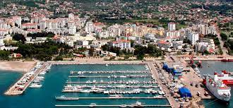
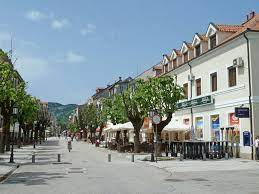
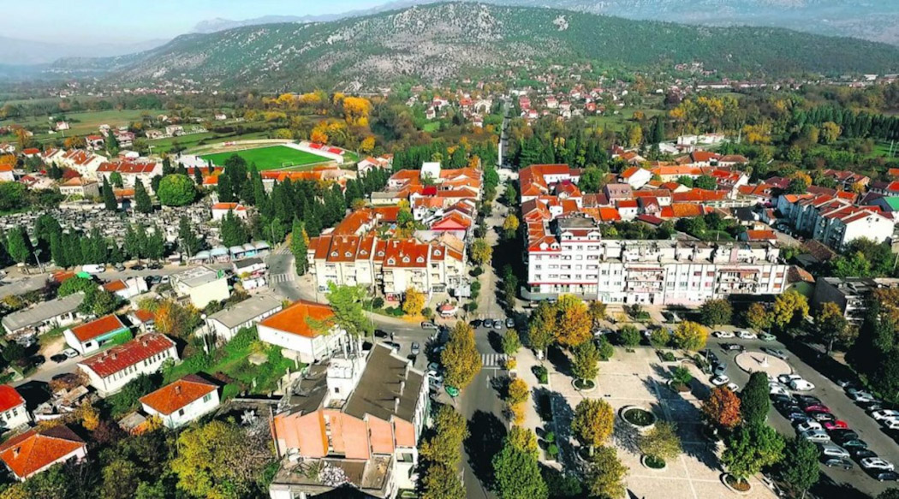
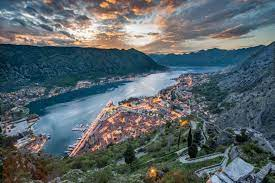
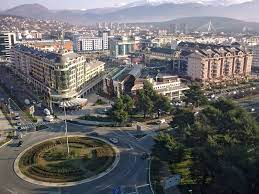
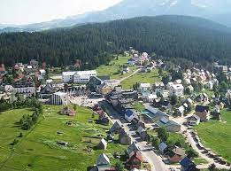

| 1. |
Bar |
Južna |
42,068 |
- Stari grad Bar
- Saborni hram Svetog Jovana Vladimira
- Stara maslina
|
 |
| 2. |
Cetinje |
Centralna |
16,657 |
- Cetinjski Manastir
- Biljarda
- Narodni muzej Crne Gore
|
 |
| 3. |
Danilovgrad |
Centralna |
18,472 |
- Manastir Ostrog
- Manastir Ždrebaonik
- Dvorac Kralja Nikole
|
 |
| 4. |
Kotor |
Južna |
22,601 |
- Stari grad Kotor
- Gospa od Škrpjela
- Perast
|
 |
| 5. |
Podgorica |
Centralna |
185 915 |
- Saborni hram Hristovog Vaskrsenja
- Dvorac Petrovića
- Sahat Kula
|
 |
| 6. |
Žabljak |
Sjeverna |
3,569 |
- Crno jezero
- Vražje jezero
- Most na Đurđevića Tari
|
 |